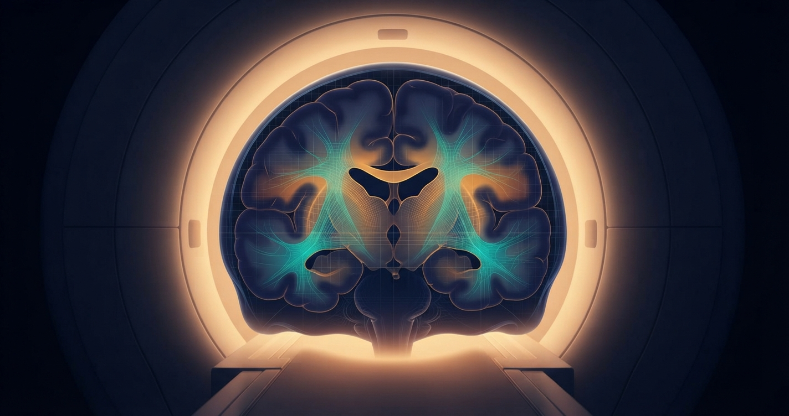
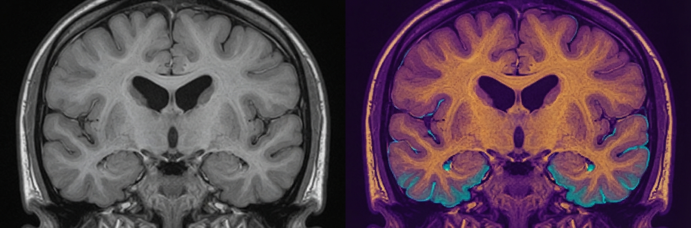
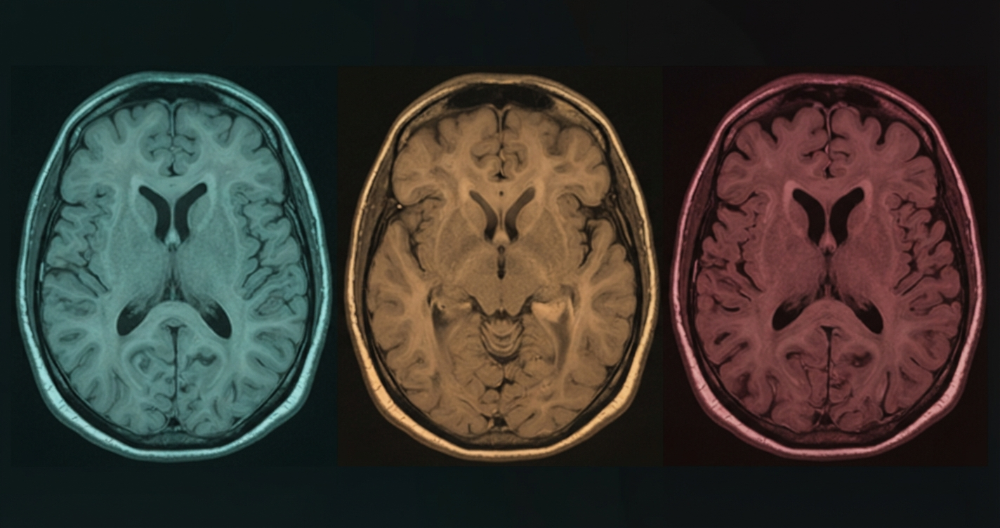
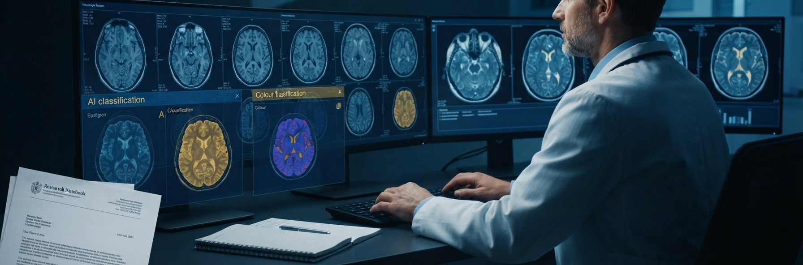

P22 classifies Alzheimer’s Disease severity from brain MRI scans using a validated 4-engine SVM ensemble and renders each scan in real-time false colour — mapping tissue atrophy classes to vivid, diagnostically meaningful palettes. A clinician always stays in command. Six interactive demo cases span the full spectrum from early preservation to advanced atrophy.
P22 combines real-time MRI visualisation with ensemble classification and a structured grey-zone protocol. Each capability is independent but designed to work together — see the scan, score it, and know when to defer.
Six real-like MRI cases, false-colour rendered in your browser. Select a case, watch the pixel-level tissue classification update in real time, and read the NDI ensemble score. The grey-zone cases are deliberate — explore why the system defers to a specialist rather than forcing a verdict it cannot honestly support.

All six demo cases use AEGIS-Derived research data — not raw patient MRI records. Ground truth from validated research study. Never a clinical diagnosis. A qualified neurologist must interpret all findings.
Each case is selected to illustrate a distinct point on the Alzheimer’s atrophy spectrum. The two grey-zone cases are the most important for clinical AI education — they demonstrate exactly when a system should refuse to decide.
Every component of P22 is grounded in established neuroscience and signal processing. The MRI intensity histogram, the Otsu thresholding, the sigmoid boundary model, and the SVM ensemble all derive from first principles — not arbitrary design choices.
T1-weighted MRI encodes tissue density as grayscale intensity. In Alzheimer’s Disease, progressive neurodegeneration causes measurable loss of cortical grey matter and white matter, enlargement of the ventricles, and widening of the cortical sulci. These structural changes alter the MRI intensity histogram in predictable ways — the distribution shifts toward lower intensities as healthy tissue is replaced by cerebrospinal fluid. P22 reads that histogram to locate the tissue class boundaries statistically, using Otsu thresholding extended to three classes.
The visualisation pipeline operates in four stages. First, the MRI pixel intensity histogram is computed across the active brain region only (bounding-box optimised). Second, two statistical thresholds T and T⊂2; are located by sequential Otsu analysis — T separates low from transitional tissue, T⊂2; separates transitional from high-atrophy. Third, sigmoid blending weights at every pixel produce smooth colour transitions rather than hard class boundaries. Fourth, each class’s 12-stop perceptual LUT maps the per-class pixel intensity to a vivid, diagnostically distinct colour. The full pipeline runs client-side on HTML5 Canvas, rendering at interactive speed.

Class assignment is fully statistical — thresholds are computed from each scan’s own intensity distribution, not from fixed global values. The colour palettes are chosen for maximum perceptual separability, with vivid floors that ensure even low-intensity pixels carry diagnostic colour information.
All engines trained and evaluated on a distilled research dataset drawn from published, consented neuroimaging studies. Validation methodology ensures no patient’s data appears in both training and evaluation. Results reported exactly as measured — no inflation, no cherry-picking.
| Engine tier | Validation AUC | Architecture | Role |
|---|---|---|---|
| Engine 1 🏆 | 0.8511 | Linear kernel SVM | Champion — highest validated AUC |
| Engine 2 | 0.8421 | Nu-SVM variant | Ensemble member |
| Engine 3 | 0.8394 | RBF kernel SVM | Ensemble member |
| Engine 4 ★ FUZZY | 0.8351 | Fuzzy SVM variant | Clinical conservative — lower false-positive rate |
Honest note: AUC range 0.8351–0.8511 reflects genuine ensemble agreement — all four engines are competitive, which is exactly what you want in a weighted vote. The fuzzy variant is intentionally conservative, trading AUC for a lower false-positive rate on borderline cases. No single engine is used alone.
P22 uses an AEGIS-Derived distilled research dataset — a curated, feature-engineered dataset derived from consented, published neuroimaging research under PDPA-compliant data governance. Raw patient MRI files are not distributed. The demo cases embedded in the public tool are synthetic MRI representations derived from real feature distributions — not raw scans, not identifiable data.

These apps demonstrate clinical AI systems capable of classification, early pre-emptive detection, and progressive augmented management. Because full AEGIS engines and datasets run to several gigabytes, only educational demo modes are hosted here — live classification on new patient MRI data requires the AEGIS Desktop Application. Institutions wishing to contribute local data for engine refinement are welcome to reach out; we share progressive validation results with every contributing partner and operate in strict accordance with PDPA.
What institutional partners receive: technical report with full validation methodology · AEGIS Desktop Application licence · progressive model result updates as the engine board improves · co-attribution in peer-reviewed publications where applicable.
All enquiries to aegisloh@aegishumanai.com. International partnerships welcome. DUA provided before any data exchange.